天武将データベース
全武将のスキル詳細
上の一覧から1体ずつ開かなくても読めるよう、登録している全武将のステータス・スキル効果・鍛錬レベル別性能・合成候補をまとめて掲載しています。
No.1310 織田信秀【覇】
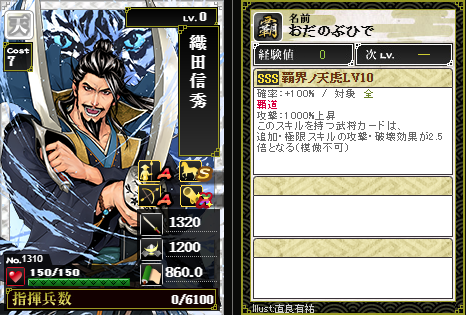
織田信秀【覇】
No.1310 ／ コスト7 ／ 指揮兵数6100
スキル
覇界ノ天虎
SSS/LV10 確率 100% 攻撃1000%上昇/対象:全 覇道
模倣不可
①攻撃1000%上昇する
②このスキルを持つ武将カードは追加・極限スキルの攻撃・破壊効果が2.5倍となる
Illust. 直良有祐
No.1311 斎藤道三（2）【覇】
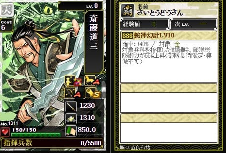
斎藤道三（2）【覇】
No.1311 ／ コスト6 ／ 指揮兵数5500
スキル
蛇神幻計
SSS/LV10 確率 40%/対象:全
模倣不可
①対象兵科を指揮した戦闘時部隊総防御力が55%上昇する(部隊長時限定)
Illust. 直良有祐
No.1312 今川義元（3）【覇】
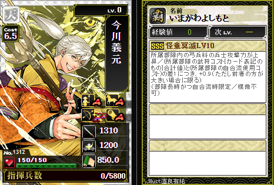
今川義元（3）【覇】
No.1312 ／ コスト6.5 ／ 指揮兵数5800
スキル
怪童冥滅
SSS/LV10 弓兵科の兵士攻撃力上昇/対象:弓
模倣不可
①所属部隊内の弓兵科の兵士攻撃力が上昇する
②(所属部隊の武将コスト[カード表記のもの]合計値)と(所属部隊の自合流使用コスト)の差1につき+0.9上昇する(ただし前者の方が大きい場合に限る)(部隊長時かつ自合流時限定)
Illust. 直良有祐
No.1313 松平清康（2）
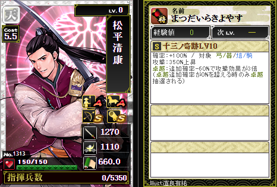
松平清康（2）
No.1313 ／ コスト5.5 ／ 指揮兵数5350
スキル
十三ノ奇跡
S/LV10 確率 100% 攻撃350%上昇/対象:弓・器・焙・騎 卓越
①攻撃350%上昇する
②卓越の追加確率-60%で攻撃効果が3倍になる(卓越の追加確率が0%を超える時のみ卓越抽選される)
Illust. 直良有祐
No.1314 大内義隆（3）
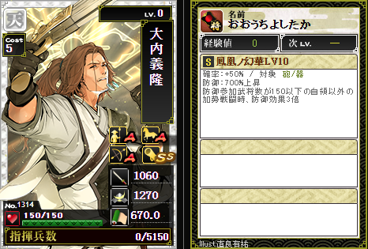
大内義隆（3）
No.1314 ／ コスト5 ／ 指揮兵数5150
スキル
鳳凰ノ幻華
S/LV10 確率 50% 防御700%上昇/対象:砲・器
①防御700%上昇する
②防御参加武将数が150以下の自領以外の加勢戦闘時防御効果が3倍になる
Illust. 直良有祐
No.1315 北条氏綱（2）
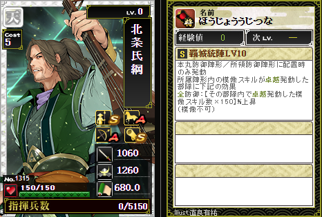
北条氏綱（2）
No.1315 ／ コスト5 ／ 指揮兵数5150
スキル
覇城統陣
S/LV10 全防御(模倣スキル卓越発動数×150)%上昇/対象:全
模倣不可
①本丸防御陣形・所領防御陣形に配置時所属陣形内の模倣スキルが卓越発動した部隊に下記の効果を与える
②全防御が(その部隊内で卓越発動した模倣スキル数×150)%上昇する
Illust. 直良有祐
No.1316 尼子経久（3）
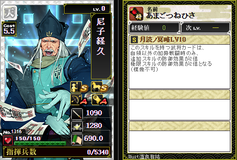
尼子経久（3）
No.1316 ／ コスト5.5 ／ 指揮兵数5340
スキル
月読ノ冥略
S/LV10 追加・極限スキルの防御効果2倍/対象:-
模倣不可
①このスキルを持つ武将カードは自領以外の加勢戦闘時のみ追加スキルの防御効果が2倍になる
②極限スキルの防御効果が2倍になる
Illust. 直良有祐
No.1317 細川晴元（2）
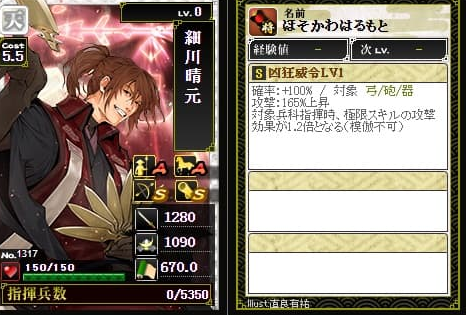
細川晴元（2）
No.1317 ／ コスト5.5 ／ 指揮兵数5350
スキル
凶狂威令
S/LV10 確率 100% 攻撃510%上昇/対象:弓・砲・器
模倣不可
①攻撃510%上昇する
②対象兵科指揮時極限スキルの攻撃効果が3.5倍となる
Illust. 直良有祐
No.1318 武田晴信（4）
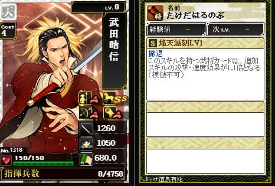
武田晴信（4）
No.1318 ／ コスト4 ／ 指揮兵数4750
スキル
焔天滅刻
S/LV10 追加スキルの攻撃・速度効果2.5倍/対象:- 撤退
模倣不可
①このスキルを持つ武将カードは追加スキルの攻撃・速度効果が2.5倍となる
Illust. 直良有祐
No.1319 朝倉宗滴
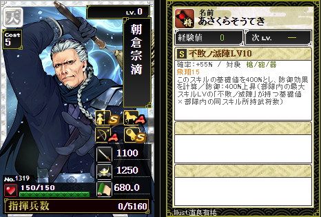
朝倉宗滴
No.1319 ／ コスト5 ／ 指揮兵数5160
スキル
不敗ノ滅陣
S/LV10 確率 55% 防御400%上昇/対象:槍・砲・器 飛翔15
①このスキルの基礎値を400%として防御効果を計算する
②防御400%上昇する(部隊内の最大スキルLVの「不敗ノ滅陣」が持つ基礎値×部隊内の同スキル所持武将数)
Illust. 直良有祐
No.1320 伊達稙宗
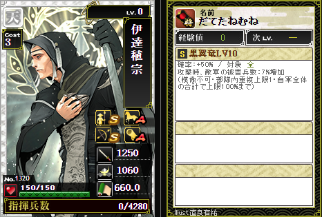
伊達稙宗
No.1320 ／ コスト3 ／ 指揮兵数4280
スキル
黒翼竜
S/LV10 確率 50% 敵軍の被害兵数7%増加/対象:全
模倣不可
①攻撃時敵軍の被害兵数が7%増加する(部隊内重複上限1・自軍全体の合計で上限100%まで)
Illust. 直良有祐
No.1321 六角定頼
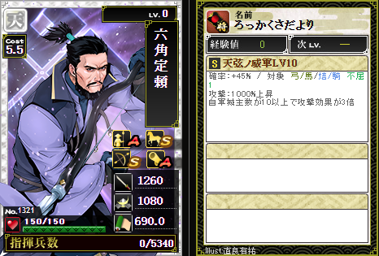
六角定頼
No.1321 ／ コスト5.5 ／ 指揮兵数5340
スキル
天弦ノ威軍
S/LV10 確率 45% 攻撃1000%上昇/対象:弓・馬・焙・騎 不屈1
①攻撃1000%上昇する
②自軍城主数が10以上で攻撃効果が3倍になる
Illust. 直良有祐
No.1298 豊臣秀長【覇】
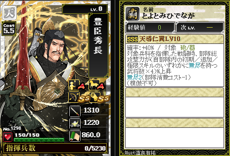
豊臣秀長【覇】とよとみひでなが
No.1298 ／ コスト5.5 ／ 指揮兵数5230
スキル
天導仁翼
SSS/LV10 確率 40% 総攻撃(係数×無尽武将数)%上昇/対象:砲・器 無尽2
①対象兵科(砲・器)を指揮した戦闘時部隊総攻撃力が(自部隊内の初期／追加／極限スキルのいずれかに無尽を持つ武将数×4.0)%上昇する
②無尽2を付与する(模倣不可)(鍛錬しても発動率と無尽2は変化しない)
「無尽2」は、部隊消費コストを-1.0する効果(無尽1につき-0.5)。
Illust. 直良有祐
No.1299 石田三成（7）【覇】
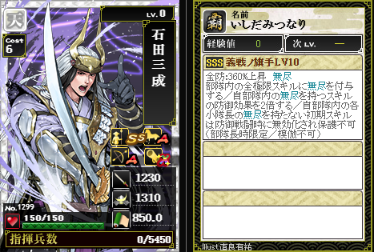
石田三成（7）【覇】いしだみつなり
No.1299 ／ コスト6 ／ 指揮兵数5450
スキル
義戦ノ旗手
SSS/LV10 確率 100% 防御360%上昇/対象:全 無尽
模倣不可
部隊長時限定
①部隊内の全極限スキルに無尽を付与する(すでに無尽を持つ極限スキルには重ねて付与されない)
②自部隊内の無尽を持つスキルの防御効果を2倍する(TR6のみ2.1倍このスキル自身も無尽持ちのため対象になる)
③自部隊内の各小隊長(部隊長本人以外)が持つ無尽を持たない初期スキルは防御戦闘時に無効化され保護スキルでも防げない
Illust. 直良有祐
No.1300 大谷吉継（3）【覇】
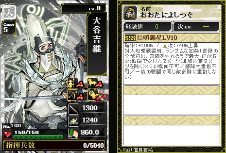
大谷吉継（3）【覇】おおたによしつぐ
No.1300 ／ コスト5 ／ 指揮兵数5040
スキル
信明義星
SSS/LV10 確率 100% 攻撃740%上昇/対象:全
①対人攻撃戦闘時ランダムな加勢1部隊の全武将は戦闘で受けたダメージ(固定ダメージ除く)×係数だけ最大HPが減少する(部隊を外れるまで持続 係数はLV10=0.2)(模倣不可・部隊内重複不可・同一敵部隊への重複不可)
Illust. 直良有祐
No.1301 上杉景勝（6）
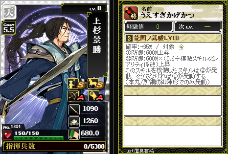
上杉景勝（6）うえすぎかげかつ
No.1301 ／ コスト5.5 ／ 指揮兵数5300
スキル
龍国ノ武威
S/LV10 確率 35% 防御600%上昇/対象:全
本丸/所領防御陣形時のみ発動する
①防御600%上昇する
②このスキルを模倣したスキルの場合、防御600%×(0.6÷模倣スキルのレアリティ係数)上昇する(①の代わりに②が発動)
模倣スキルのレアリティ係数別 防御上昇値(0.6÷係数)
Illust. 直良有祐
No.1302 佐竹義宣（3）
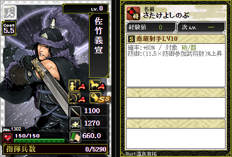
佐竹義宣（3）さたけよしのぶ
No.1302 ／ コスト5.5 ／ 指揮兵数5290
スキル
泰厳射手
S/LV10 確率 60% 防御上昇/対象:砲・器
①(係数×防御参加武将数)%を防御効果に加算する(係数はLV10=11.5)
Illust. 直良有祐
No.1303 本多忠勝（2）
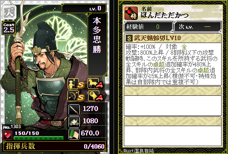
本多忠勝（2）ほんだただかつ
No.1303 ／ コスト2.5 ／ 指揮兵数4060
スキル
武天蜻蛉切
S/LV10 確率 100% 攻撃800%上昇/対象:全
模倣不可
①攻撃800%上昇する
②8部隊以下の攻撃戦闘時、このスキルを所持する武将の全スキルの卓越追加確率が480%上昇する(同じ列の卓越依存スキルにのみ加算)
③8部隊以下の攻撃戦闘時、部隊内武将全スキルの卓越発動率が15%上昇する(特殊効果は自部隊内では重複不可)
Illust. 直良有祐
No.1304 真田昌幸（5）
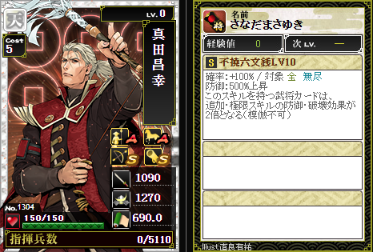
真田昌幸（5）さなだまさゆき
No.1304 ／ コスト5 ／ 指揮兵数5110
スキル
不撓六文銭
S/LV10 確率 100% 防御500%上昇/対象:全 無尽
模倣不可
①防御500%上昇する
②無尽を持つため部隊消費コストを-0.5する
③このスキルを持つ武将カードは、追加・極限スキルの防御・破壊効果が2倍となる
Illust. 直良有祐
No.1305 福島正則（4）
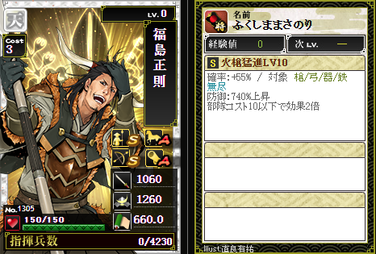
福島正則（4）ふくしままさのり
No.1305 ／ コスト3 ／ 指揮兵数4230
スキル
火槍猛進
S/LV10 確率 55% 防御740%上昇/対象:槍・弓・器・鉄 無尽
①防御740%上昇する
②無尽を持つため部隊消費コストを-0.5する
③部隊コスト10以下で効果2倍となる(TR1時10.5以下、TR2時11以下、TR3時12以下、TR4時13以下、TR5時14以下、TR6時15以下)
④TR6(パラレル版)では確率65%に上昇する
Illust. 直良有祐
No.1306 毛利輝元（5）
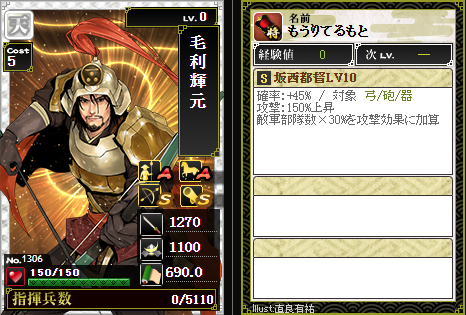
毛利輝元（5）もうりてるもと
No.1306 ／ コスト5 ／ 指揮兵数5110
スキル
坂西都督
S/LV10 確率 45% 攻撃150%上昇/対象:弓・砲・器
①攻撃150%上昇する(固定値)
②敵軍部隊数×係数%を攻撃効果に加算する(係数はLV10=30、計算エンジン未対応)
③TR6(パラレル版)では不屈1を追加取得する
Illust. 直良有祐
No.1307 立花宗茂（5）
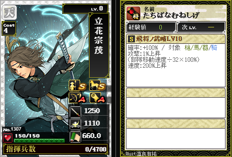
立花宗茂（5）たちばなむねしげ
No.1307 ／ コスト4 ／ 指揮兵数4700
スキル
飛将ノ武略
S/LV10 確率 100% 速度200%上昇/対象:槍・馬・器・騎
①攻撃が部隊移動速度÷除数×100%上昇する(除数はLV10=32/TR1=31/TR2=30/TR3=28/TR4=26/TR5=24/TR6=22 攻撃シミュレーターで自動計算に対応済み)
②速度200%上昇する
鍛錬レベル×部隊移動速度 攻撃%上昇早見表
攻撃%上昇=部隊移動速度÷除数×100%(除数はLV10=32／TR1=31／TR2=30／TR3=28／TR4=26／TR5=24／TR6=22)
Illust. 直良有祐
No.1308 小西行長（2）
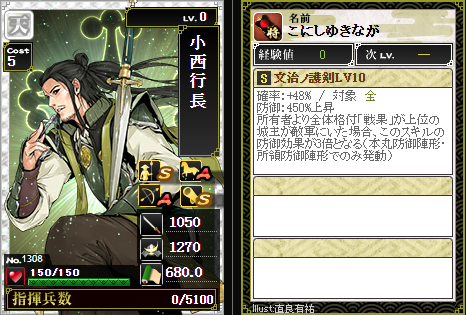
小西行長（2）こにしゆきなが
No.1308 ／ コスト5 ／ 指揮兵数5100
スキル
文治ノ護剣
S/LV10 確率 48% 防御450%上昇/対象:全
①防御450%上昇する
②所有者より全体格付「戦果」が上位の城主が敵軍にいた場合、このスキルの防御効果が3倍となる(本丸防御陣形・所領防御陣形のみ発動)
Illust. 直良有祐
No.1309 津軽為信
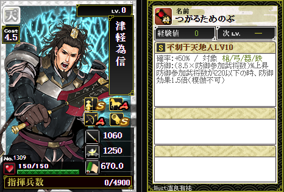
津軽為信つがるためのぶ
No.1309 ／ コスト4.5 ／ 指揮兵数4900
スキル
不制于天地人
S/LV10 確率 50% 防御上昇/対象:槍・弓・器・鉄
模倣不可
①(係数×防御参加武将数)%を防御効果に加算する(係数はLV10=8.5)
②防御参加武将数が220以下の時、防御効果1.5倍となる
Illust. 直良有祐
No.10074 上杉謙信-復刻-【覇】
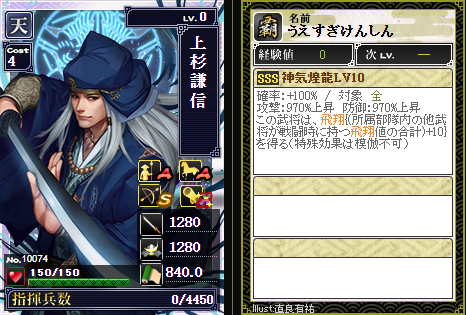
上杉謙信-復刻-【覇】うえすぎけんしん
No.10074 ／ コスト4 ／ 指揮兵数4450
スキル
神気煌龍
SSS/LV10 確率 100% 攻撃970%上昇/対象:全
①攻撃970%上昇する
②防御970%上昇する
③この武将は、飛翔｛所属部隊内の他武将が戦闘時に持つ飛翔値の合計+10｝を得る(特殊効果は模倣不可)
Illust. 直良有祐
No.10075 毛利輝元-復刻-【覇】
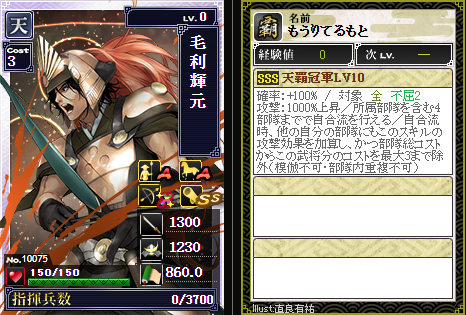
毛利輝元-復刻-【覇】もうりてるもと
No.10075 ／ コスト3 ／ 指揮兵数3700
スキル
天覇冠軍
SSS/LV10 確率 100% 攻撃1000%上昇/対象:全 不屈2
模倣不可
①攻撃1000%上昇する
②所属部隊を含む4部隊までで自合流を行える
③自合流時、他の自分の部隊にもこのスキルの攻撃効果を加算する
④部隊総コストからこの武将分のコストを最大3まで除外する(部隊内重複不可)
Illust. 直良有祐
No.10076 最上義光-復刻-【覇】
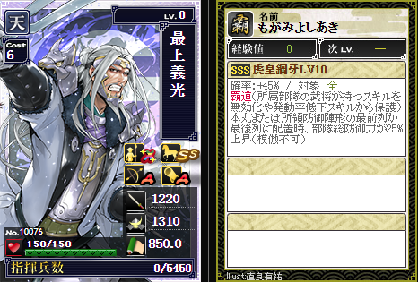
最上義光-復刻-【覇】もがみよしあき
No.10076 ／ コスト6 ／ 指揮兵数5450
スキル
虎皇鋼牙
SSS/LV10 確率 45% 対象:全 覇道
①本丸または所領防御陣形の最前列/最後列に配置時、部隊総防御力が25%上昇する(模倣不可)
Illust. 直良有祐
No.1286 織田信長（9）【覇】
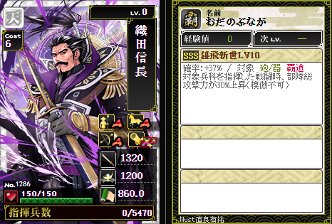
織田信長（9）【覇】おだのぶなが
No.1286 ／ コスト6 ／ 指揮兵数5470
スキル
雄飛新世
SSS/LV10 確率 37% 部隊総攻撃力上昇/対象:砲・器 覇道
模倣不可
①対象兵科(砲・器)を指揮した戦闘時、部隊総攻撃力が30%上昇する
②覇道を持つため所属部隊の武将のスキルを無効化や発動率低下から保護する
Illust. 直良有祐
No.1287 豊臣秀吉（5）【覇】
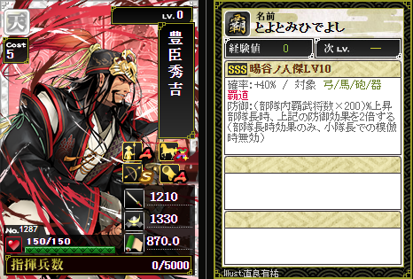
豊臣秀吉（5）【覇】とよとみひでよし
No.1287 ／ コスト5 ／ 指揮兵数5000
スキル
暘谷ノ人傑
SSS/LV10 確率 40% 防御上昇/対象:弓・馬・砲・器 覇道
①部隊内覇武将数(最大4人)×200%を防御効果に加算する
②部隊長時、上記の防御効果を2倍にする(部隊長時効果のみ、小隊長での模倣時無効)
③覇道を持つため所属部隊の武将のスキルを無効化や発動率低下から保護する
Illust. 直良有祐
No.1288 徳川家康（6）【覇】
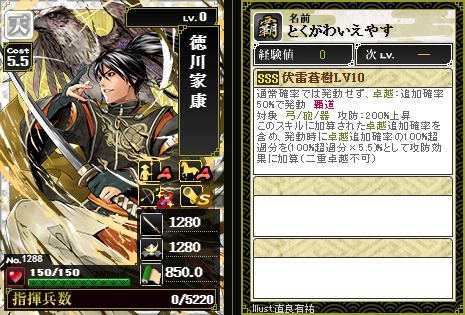
徳川家康（6）【覇】とくがわいえやす
No.1288 ／ コスト5.5 ／ 指揮兵数5220
スキル
伏雷蒼樹
SSS/LV10 確率 卓越追加確率50%で発動(通常確率では発動しない) 攻防200%上昇/対象:弓・砲・器 覇道
①卓越の追加発動確率50%で発動する
②攻防各200%上昇する
③卓越追加確率のうち100%を超えた分を超過分×5.5%として攻防効果に加算する(二重卓越不可)
Illust. 直良有祐
No.1289 長宗我部元親（7）
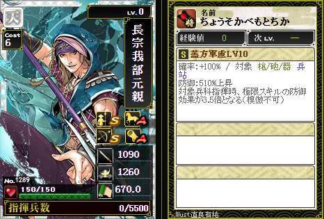
長宗我部元親（7）ちょうそかべもとちか
No.1289 ／ コスト6 ／ 指揮兵数5500
スキル
蓋方軍慮
S/LV10 確率 100% 防御510%上昇/対象:槍・砲・器 兵站
模倣不可
①防御510%上昇する
②対象兵科指揮時、極限スキルの防御効果が3.5倍となる
Illust. 直良有祐
No.1290 武田信玄（6）
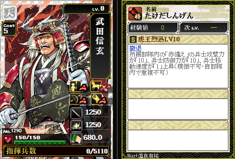
武田信玄（6）たけだしんげん
No.1290 ／ コスト5 ／ 指揮兵数5110
スキル
虎王烈迅
S/LV10 常時発動 撤退
①所属部隊内の「赤備え」兵士の攻撃力+10、防御力+10、移動速度+1上昇する
②TR3以降は攻撃参加時の自軍全部隊の帰還速度も倍化する(模倣不可・自部隊内重複不可)
Illust. 直良有祐
No.1291 上杉謙信（5）
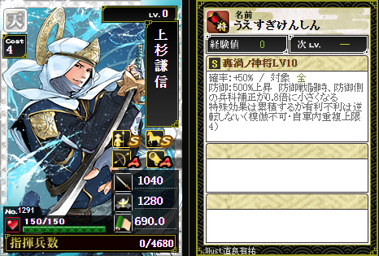
上杉謙信（5）うえすぎけんしん
No.1291 ／ コスト4 ／ 指揮兵数4680
スキル
轟渦ノ神将
S/LV10 確率 50% 防御500%上昇/対象:全
模倣不可
①防御500%上昇する
②防御側陣形時、防御側の兵士補正が0.8倍に小さくなる(特殊効果は累積するが有利不利は逆転しない、自軍内重複上限4)
Illust. 直良有祐
No.1292 伊達政宗（6）
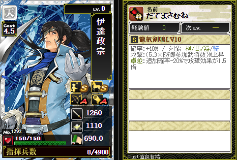
伊達政宗（6）だてまさむね
No.1292 ／ コスト4.5 ／ 指揮兵数4900
スキル
龍気剣鳴
S/LV10 確率 40% 攻撃上昇/対象:槍・馬・器・騎
①(係数×防御参加武将数)%を攻撃効果に加算する(係数はLV10=5.3)
②卓越:追加確率-20%(LV10)〜+50%(TR6)で攻撃効果1.5倍
Illust. 直良有祐
No.1293 毛利元就（4）
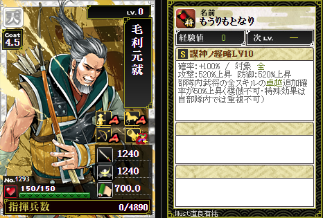
毛利元就（4）もうりもとなり
No.1293 ／ コスト4.5 ／ 指揮兵数4890
スキル
謀神ノ経略
S/LV10 確率 100% 攻防520%上昇/対象:全
模倣不可
①攻撃520%上昇する
②防御520%上昇する
③部隊内武将の全スキルの卓越発動率が50%上昇する(特殊効果は自部隊内では重複不可)
④TR6(パラレル版)では飛翔40を追加取得する
Illust. 直良有祐
No.1294 島津義弘（4）
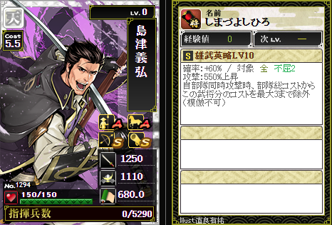
島津義弘（4）しまづよしひろ
No.1294 ／ コスト5.5 ／ 指揮兵数5290
スキル
雄武英略
S/LV10 確率 60% 攻撃550%上昇/対象:全
①攻撃550%上昇する
②自部隊同時攻撃時、部隊総コストからこの武将分のコストを最大3(TR6で6)まで除外する(模倣不可)
Illust. 直良有祐
No.1295 大友宗麟（6）
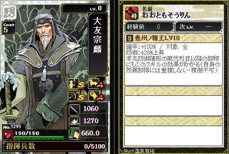
大友宗麟（6）おおともそうりん
No.1295 ／ コスト5 ／ 指揮兵数5100
スキル
豊州ノ雅王
S/LV10 確率 100% 防御420%上昇/対象:全
①防御420%上昇する
②本丸防御陣形の第2列目以降の部隊にもこのスキルの効果が及ぶ(自身の所属部隊には重複しない・模倣不可)
Illust. 直良有祐
No.1296 北条早雲（2）
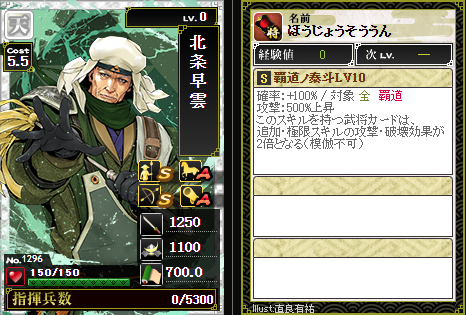
北条早雲（2）ほうじょうそううん
No.1296 ／ コスト5.5 ／ 指揮兵数5300
スキル
覇道ノ泰斗
S/LV10 確率 100% 攻撃500%上昇/対象:全 覇道
模倣不可
①攻撃500%上昇する
②このスキルを持つ武将カードは、追加・極限スキルの攻撃・破壊効果が2倍となる
Illust. 直良有祐
No.1297 斎藤道三（3）
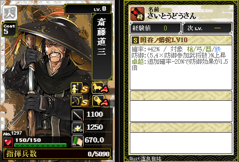
斎藤道三（3）さいとうどうさん
No.1297 ／ コスト5 ／ 指揮兵数5090
スキル
国呑ノ蟒蛇
S/LV10 確率 42% 防御上昇/対象:槍・弓・器・鉄
①(係数×防御参加武将数)%を防御効果に加算する(係数はLV10=5.4)
②卓越:追加確率-20%(LV10)〜+50%(TR6)で防御効果1.5倍
Illust. 直良有祐
No.10063 南光坊天海
南光坊天海No.10063
コスト5 ／ 全攻
この武将の画像・ステータス・統率の詳細データはまだ登録されていません。
スキル概要: 8部隊以下の攻撃戦闘時、卓越確率上昇
No.10064 長尾景虎
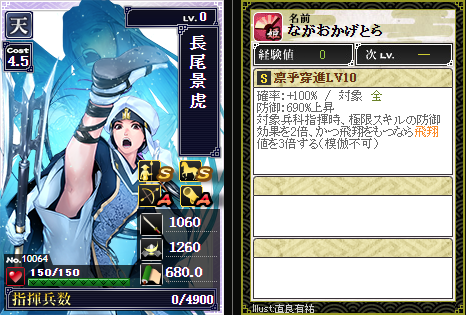
長尾景虎ながおかげとら
No.10064 ／ コスト4.5 ／ 指揮兵数4900
スキル
凛乎穿進
S/LV10 確率 100% 防御690%上昇/対象:全
模倣不可
①防御690%上昇する
②対象兵科指揮時、極限スキルの防御効果を2倍にする
③飛翔値をもつ場合、自身の飛翔値を3倍にする(飛翔が無い場合は適用しない)
Illust. 直良有祐
No.10065 世良田二郎三郎
世良田二郎三郎No.10065
コスト5 ／ 全攻
この武将の画像・ステータス・統率の詳細データはまだ登録されていません。
スキル概要: 8部隊以下の攻撃戦闘時、卓越確率上昇
No.10066 斎藤一【覇】
斎藤一【覇】No.10066
コスト5.5 ／ 全攻 ／ 無尽
この武将の画像・ステータス・統率の詳細データはまだ登録されていません。
スキル概要: 追加スキルの攻撃効果2.5倍
No.10067 相楽左之助【覇】
相楽左之助【覇】No.10067
コスト5 ／ 槍砲器防
この武将の画像・ステータス・統率の詳細データはまだ登録されていません。
スキル概要: 自軍内での同一兵種依存
No.10069 長宗我部元親-復刻-
長宗我部元親-復刻-No.10069
コスト5 ／ 槍馬砲器防
この武将の画像・ステータス・統率の詳細データはまだ登録されていません。
スキル概要: 卓越発動時効果3倍
No.10070 細川幽斎-復刻-【天】
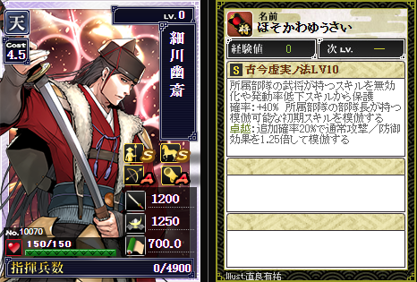
細川幽斎-復刻-【天】ほそかわゆうさい
No.10070 ／ コスト4.5 ／ 指揮兵数4900
スキル
古今虚実ノ法
S/LV10 確率 40% 対象:部隊長 覇道
模倣不可
①覇道を持つため所属部隊の武将のスキルを無効化や発動率低下から保護する
②部隊長の持つ模倣可能な初期スキルを模倣する
③卓越時に通常攻撃/防御効果を強化する(追加確率20%・1.25倍)
Illust. 直良有祐
No.1274 豊臣秀吉【覇】
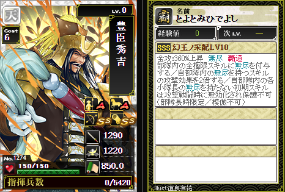
豊臣秀吉【覇】とよとみひでよし
No.1274 ／ コスト6 ／ 指揮兵数5420
スキル
幻王ノ采配
SSS/LV10 確率 100% 攻撃360%上昇/対象:全 無尽 覇道
模倣不可
部隊長時限定
①部隊内の全極限スキルに無尽を付与する
②自部隊内の無尽を持つスキルの攻撃効果を2倍する
③自部隊内の各小隊長の無尽を持たない初期スキルは攻撃戦闘時に無効化され保護不可(覇道天聖等の保護スキルでも無効化を防げない)
Illust. 直良有祐
No.1275 竹中半兵衛【覇】
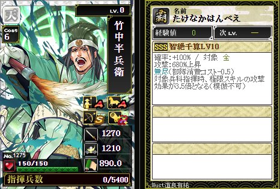
竹中半兵衛【覇】たけなかはんべえ
No.1275 ／ コスト6 ／ 指揮兵数5400
スキル
智絶千算
SSS/LV10 確率 100% 攻撃680%上昇/対象:全 無尽
模倣不可
①攻撃680%上昇する
②無尽を持つため部隊消費コストを-0.5する
③対象兵科指揮時、極限スキルの攻撃効果が3.5倍となる
Illust. 直良有祐
No.1276 結城秀康
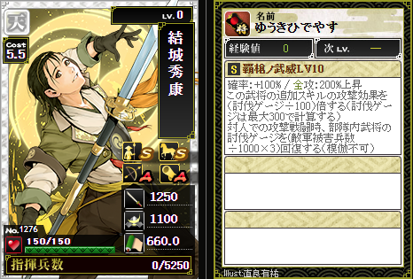
結城秀康ゆうきひでやす
No.1276 ／ コスト5.5 ／ 指揮兵数5250
スキル
覇槍ノ武威
S/LV10 確率 100% 攻撃200%上昇/対象:全
模倣不可
①攻撃200%上昇する
②この武将の追加スキルの攻撃効果を(討伐ゲージ÷100)倍する(討伐ゲージは最大300で計算する)
③対人での攻撃戦闘時、部隊内武将の討伐ゲージを(敵軍被害兵数÷1000×3)回復する
Illust. 直良有祐
No.1277 石田三成
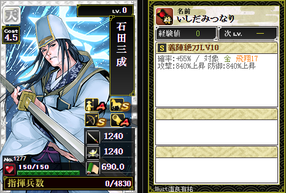
石田三成いしだみつなり
No.1277 ／ コスト4.5 ／ 指揮兵数4830
スキル
義陣絶刀
S/LV10 確率 55% 攻撃840%上昇 防御840%上昇/対象:全 飛翔17
Illust. 直良有祐
No.1278 羽柴秀長
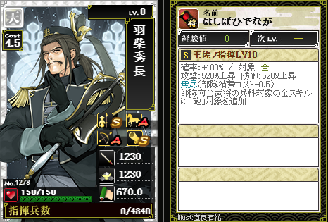
羽柴秀長はしばひでなが
No.1278 ／ コスト4.5 ／ 指揮兵数4840
スキル
王佐ノ指揮
S/LV10 確率 100% 攻撃520%上昇 防御520%上昇/対象:全 無尽
①攻撃520%上昇 防御520%上昇する
②無尽を持つため部隊消費コストを-0.5する
③部隊内全武将の兵科対象の全スキルに「砲」対象を追加する
Illust. 直良有祐
No.1279 荒木村重
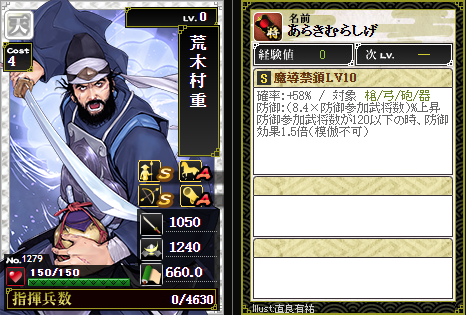
荒木村重あらきむらしげ
No.1279 ／ コスト4 ／ 指揮兵数4630
スキル
魔導禁鎖
S/LV10 確率 58% 防御(係数×防御参加武将数)%上昇/対象:槍・弓・砲・器
模倣不可
①防御を係数(LV10=8.4)×防御参加武将数で上昇する
②防御参加武将数が120以下の時、防御効果1.5倍となる
Illust. 直良有祐
No.1280 小早川隆景
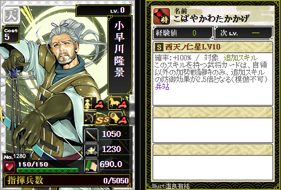
小早川隆景こばやかわたかかげ
No.1280 ／ コスト5 ／ 指揮兵数5050
スキル
西天ノ仁星
S/LV10 確率 100% 対象:追加スキル 兵站
模倣不可
①このスキルを持つ武将カードは、自領以外の加勢戦闘時のみ、追加スキルの防御効果が2.5倍となる
Illust. 直良有祐
No.1281 宇喜多秀家
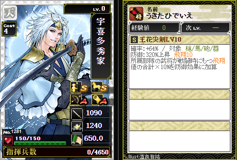
宇喜多秀家うきたひでいえ
No.1281 ／ コスト4 ／ 指揮兵数4650
スキル
王花尖剣
S/LV10 確率 64% 防御320%上昇/対象:槍・馬・砲・器 飛翔10
①防御320%上昇する
②所属部隊の武将が戦闘時にもつ飛翔値の合計×10%を防御効果に加算する
Illust. 直良有祐
No.1282 黒田長政
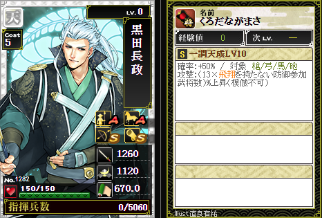
黒田長政くろだながまさ
No.1282 ／ コスト5 ／ 指揮兵数5060
スキル
一調天成
S/LV10 確率 50% 攻撃(係数×飛翔を持たない防御参加武将数)%上昇/対象:槍・弓・馬・砲
模倣不可
①攻撃を係数(LV10=13)×飛翔を持たない防御参加武将数で上昇する
Illust. 直良有祐
No.1283 鍋島直茂
鍋島直茂なべしまなおしげ
No.1283 ／ コスト5 ／ 指揮兵数5060
スキル
旋渦訣刀
S/LV10 確率 58% 防御480%上昇/対象:全
①防御480%上昇する
②部隊内で武将コストが武将スキルに影響するとき、防御効果部分のみこの武将のコストを+1で計算する(特殊効果は部隊内重複不可)
Illust. 直良有祐
No.1284 加藤清正
加藤清正かとうきよまさ
No.1284 ／ コスト5 ／ 指揮兵数5040
スキル
虎伐閃衝
S/LV10 確率 36% 攻撃(敵軍総武将コスト×係数)%上昇/対象:槍・砲・器
模倣不可
①攻撃を敵軍総武将コスト×係数(LV10=2.1)%で上昇する
Illust. 直良有祐
No.1285 島津義久
島津義久しまづよしひさ
No.1285 ／ コスト1 ／ 指揮兵数2800
スキル
炎国覇弾
S/LV10 確率 100% 防御540%上昇/対象:全
模倣不可
①防御540%上昇する
②所領防御陣形に配置時のみ、この武将の最大指揮兵数は陣形内で最大指揮兵数の大きい武将と同兵数になる
Illust. 直良有祐
No.10062 百地三太夫
百地三太夫ももちさんだゆう
No.10062 ／ コスト5.5 ／ 指揮兵数5250
スキル
封法大十字
S/LV10 確率 40% 対象:部隊長 撤退
模倣不可
①部隊長撤退時、所属部隊の部隊長が持つ模倣可能な初期スキルを、通常攻撃/防御効果を1.24倍して模倣する
②撤退を持つため部隊は陣での防御戦闘に参加しない
Illust. 直良有祐
No.1262 最上義光【覇】
最上義光【覇】もがみよしあき
No.1262 ／ コスト5.5 ／ 指揮兵数5170
スキル
虎将鉄牙
SSS/LV10 確率 45% 対象:全 覇道
模倣不可
①覇道を持つため所属部隊の武将のスキルを無効化や発動率低下から保護する
②本丸または所領防御陣形の最前列か最後列に配置時、部隊総防御力が20%上昇する
Illust. 直良有祐
No.1263 徳川家康（5）【覇】
徳川家康（5）【覇】とくがわいえやす
No.1263 ／ コスト6 ／ 指揮兵数5400
スキル
偃武覇陣
SSS/LV10 確率 50% 全攻防760%上昇/対象:全 飛翔30 不屈1 覇道 撤退
模倣不可
①全攻防760%上昇する
②破壊150%上昇する
③飛翔30を持つ
④不屈1を持つ
⑤覇道を持つため所属部隊の武将のスキルを無効化や発動率低下から保護する
⑥撤退を持つ
⑦所属部隊の武将回復速度が500%上昇する(HP・回復の概念は未実装のため参考データ)
⑧自身を含む所属部隊の武将が通常部隊枠から外れるとき武将HPが最大90%まで回復する
Illust. 直良有祐
No.1264 相馬義胤（2）
相馬義胤（2）そうまよしたね
No.1264 ／ コスト4.5 ／ 指揮兵数4800
スキル
北天ノ奔馬
S/LV10 確率 55% 攻撃150%上昇/対象:全
模倣不可
①攻撃150%上昇する
②この武将と同じ兵種を指揮する敵軍武将数×12.5%を攻撃効果に加算する
Illust. 直良有祐
No.1265 蒲生氏郷（2）
蒲生氏郷（2）がもううじさと
No.1265 ／ コスト4.5 ／ 指揮兵数4800
スキル
天限ノ麒麟
S/LV10 確率 45% 防御150%上昇/対象:槍・馬・器・焙 兵站
模倣不可
①防御150%上昇する
②破壊150%上昇する
③防御参加武将数×6.5%を防御効果に加算する
Illust. 直良有祐
No.1266 直江兼続（4）
直江兼続（4）なおえかねつぐ
No.1266 ／ コスト5 ／ 指揮兵数4980
スキル
三全将帥
S/LV10 確率 48% 防御上昇/対象:槍・弓・器・騎
①(6.2×防御参加武将数)%を防御効果に加算する
②卓越:追加確率10%で防御効果が1.2倍になる(模倣不可)
Illust. 直良有祐
No.1267 佐竹義宣（2）
佐竹義宣（2）さたけよしのぶ
No.1267 ／ コスト4 ／ 指揮兵数4590
スキル
義響鉄心
S/LV10 確率 50% 防御200%上昇/対象:槍・弓・砲・器
模倣不可
①防御200%上昇する
②所領防御陣形の第伍列目に配置時防御効果が3倍となる
Illust. 直良有祐
No.1268 真田信繁
真田信繁さなだのぶしげ
No.1268 ／ コスト5 ／ 指揮兵数4990
スキル
烈火ノ闘将
S/LV10 確率 49% 攻撃(6.7×防御参加武将数)%上昇/対象:弓・馬・器・鉄 撤退
模倣不可
①攻撃(6.7×防御参加武将数)%上昇する
②撤退を持つ
③卓越追加確率10%で攻撃効果が1.2倍となる
Illust. 直良有祐
No.1269 前田利家（4）
前田利家（4）まえだとしいえ
No.1269 ／ コスト3 ／ 指揮兵数4120
スキル
灼槍不褪
S/LV10 確率 100% 攻撃470%上昇/対象:全
模倣不可
①攻撃470%上昇する
②所属部隊を含む4部隊までで自合流を行うことができる(特殊効果は重複不可)
Illust. 直良有祐
No.1270 藤堂高虎（2）
藤堂高虎（2）とうどうたかとら
No.1270 ／ コスト5.5 ／ 指揮兵数5160
スキル
乱界遊泳
S/LV10 確率 100% 防御400%上昇/対象:槍・馬・砲・器 兵站
模倣不可
①防御400%上昇する
②対象兵科指揮時、極限スキルの防御効果が3.5倍となる
Illust. 直良有祐
No.1271 小早川秀秋（4）
小早川秀秋（4）こばやかわひであき
No.1271 ／ コスト4.5 ／ 指揮兵数4780
スキル
刈世公子
S/LV10 卓越 追加確率25% 攻撃440%上昇/対象:弓・馬・器・焙
模倣不可
①通常確率では発動せず卓越時のみ追加確率25%で発動する
②発動時攻撃440%上昇する
③発動時飛翔17を得る(攻撃戦闘時のみ発動・飛翔獲得部分は二重卓越不可)
Illust. 直良有祐
No.1272 豊臣秀次
豊臣秀次とよとみひでつぐ
No.1272 ／ コスト4 ／ 指揮兵数4600
スキル
夢妖剣
S/LV10 確率 50% 防御200%上昇/対象:弓・馬・器・鉄
模倣不可
①防御200%上昇する
②本丸防御陣形の第陸列目に配置時防御効果が3倍となる
Illust. 直良有祐
No.1273 北条氏直
北条氏直ほうじょううじなお
No.1273 ／ コスト4.5 ／ 指揮兵数4790
スキル
仁侯ノ決断
S/LV10 確率 100% 攻撃450%上昇/対象:全
模倣不可
①攻撃450%上昇する
②防御450%上昇する
③自軍全武将全スキルの卓越確率に15%を加算する(自軍内重複上限2)
Illust. 直良有祐
No.1250 織田信長（8）【覇】
織田信長（8）【覇】おだのぶなが
No.1250 ／ コスト7 ／ 指揮兵数6000
スキル
倚天滅陣
SSS/LV10 確率 100% 攻撃760%上昇/対象:全 不屈1
①攻撃760%上昇する
②不屈1を持つ
③所属部隊を含む4部隊までで自合流を行うことができる
④4部隊での自合流時部隊消費コストを5低下する(特殊効果は模倣・重複不可)
Illust. 直良有祐
No.1251 毛利輝元【覇】
毛利輝元【覇】もうりてるもと
No.1251 ／ コスト3 ／ 指揮兵数3700
スキル
西覇冠軍
SSS/LV10 確率 100% 攻撃540%上昇/対象:全 不屈1
模倣不可
①攻撃540%上昇する
②不屈1を持つ
③自身合流時、自分の他部隊にもこの攻撃効果を加算する
④部隊総コストからこの武将分のコストを最大3(TR3以降3.5)まで除外する(部隊内重複不可)
Illust. 直良有祐
No.1252 武田勝頼（5）
武田勝頼（5）たけだかつより
No.1252 ／ コスト5 ／ 指揮兵数4960
スキル
陥城騎王
S/LV10 確率 45% 攻撃200%上昇/対象:弓・馬・砲・器
①攻撃200%上昇する
②自軍攻撃武将数×10%を攻撃効果に加算する
Illust. 直良有祐
No.1253 北条氏政（5）
北条氏政（5）ほうじょううじまさ
No.1253 ／ コスト4.5 ／ 指揮兵数4760
スキル
八界経略
S/LV10 確率 100% 攻撃420%上昇/対象:槍・弓・砲・器
模倣不可
①攻撃420%上昇する
②防御420%上昇する
③部隊内武将のスキル発動率+15%を得る
④卓越の追加確率+50%を得る(特殊効果は自部隊内では重複不可)
Illust. 直良有祐
No.1254 六角承禎（2）
六角承禎（2）ろっかくじょうてい
No.1254 ／ コスト4.5 ／ 指揮兵数4770
スキル
不屈ノ天弓
S/LV10 確率 100% 対象:追加スキル 兵站
模倣不可
①このスキルを持つ武将カードは自領以外への加勢戦闘時のみ追加スキルの防御効果が2.5倍となる
Illust. 直良有祐
No.1255 豊臣秀吉（5）
豊臣秀吉（5）とよとみひでよし
No.1255 ／ コスト5 ／ 指揮兵数4960
スキル
日輪ノ選剣
S/LV10 確率 60% 防御(6×防御参加武将数)%上昇/対象:槍・弓・砲・器
①防御(6×防御参加武将数)%上昇する
②防御参加武将数が120以下の時防御効果が1.5倍となる
Illust. 直良有祐
No.1256 宇喜多直家（3）
宇喜多直家（3）うきたなおいえ
No.1256 ／ コスト4 ／ 指揮兵数4570
スキル
魔弾奏者
S/LV10 確率 64% 攻撃50%上昇/対象:槍・弓・砲・器 飛翔10
①攻撃50%上昇する
②所属部隊の武将が戦闘時にもつ飛翔値の合計×9%を攻撃効果に加算する
Illust. 直良有祐
No.1257 村上武吉（2）
村上武吉（2）むらかみたけよし
No.1257 ／ コスト4 ／ 指揮兵数4560
スキル
海王怒涛
S/LV10 確率 55% 攻撃440%上昇/対象:弓・馬・砲・器
①攻撃440%上昇する
②自部隊同時攻撃時、この武将は合流し自部隊数-2の不足を得る(特殊効果は模倣不可)
Illust. 直良有祐
No.1258 相良義陽（3）
相良義陽（3）さがらよしひ
No.1258 ／ コスト3.5 ／ 指揮兵数4300
スキル
義陣響野
S/LV10 確率 35% 攻撃(敵軍総武将コスト×1.4)%上昇/対象:槍・馬・砲・器
①対象兵科(槍・馬・砲・器)を指揮した戦闘時攻撃力が敵軍総武将コスト×1.4%上昇する
Illust. 直良有祐
No.1259 長宗我部元親（6）
長宗我部元親（6）ちょうそかべもとちか
No.1259 ／ コスト4.5 ／ 指揮兵数4770
スキル
島穿鬼槍
S/LV10 確率 100% 防御150%上昇/対象:槍・馬・砲・器
模倣不可
①防御150%上昇する
②卓越追加確率-20%で防御効果が4倍となる(卓越追加確率が0%を超える時のみ卓越抽選される)
Illust. 直良有祐
No.1260 伊達輝宗
伊達輝宗だててるむね
No.1260 ／ コスト5 ／ 指揮兵数4950
スキル
龍父絶砲
S/LV10 確率 60% 攻撃420%上昇/対象:槍・弓・砲・器
①攻撃420%上昇する
②防御420%上昇する
③部隊内で武将コストが武将スキルに影響するときこの武将のコストを+3で計算する(特殊効果は部隊内重複不可)
Illust. 直良有祐
No.1261 島津家久
島津家久しまづいえひさ
No.1261 ／ コスト4 ／ 指揮兵数4560
スキル
神将火剣
S/LV10 確率 50% 防御150%上昇/対象:槍・馬・砲・器
①防御150%上昇する
②自軍内で同じ兵種を指揮している武将数×12%を防御効果に加算する
Illust. 直良有祐
No.1238 上杉謙信（2）【覇】
上杉謙信（2）【覇】うえすぎけんしん
No.1238 ／ コスト4 ／ 指揮兵数4450
スキル
神気乱龍
SSS/LV10 確率 100% 攻撃740%上昇/対象:全
①攻撃740%上昇する(TR1のみ防御560%と非対称)
②この武将は、自身を除く部隊内武将が戦闘時にもつ飛翔値の合計に等しい飛翔値を得る(特殊効果は模倣不可)
Illust. 直良有祐
No.1239 北条氏康（3）【覇】
北条氏康（3）【覇】ほうじょううじやす
No.1239 ／ コスト0.5 ／ 指揮兵数2000
スキル
獅子ノ炯眼
SSS/LV10 確率 60% 攻撃720%上昇/対象:全
模倣不可
①攻撃720%上昇する
②防御720%上昇する
③この武将を除く所属部隊の武将の最大指揮兵数に3000を加算する(部隊内重複不可)
Illust. 直良有祐
No.1240 武田信虎（2）
武田信虎（2）たけだのぶとら
No.1240 ／ コスト5 ／ 指揮兵数4940
スキル
猛虎嵐陣
S/LV10 確率 100% 攻撃450%上昇/対象:弓・馬・器・騎
模倣不可
①対象兵科(弓・馬・器・騎)を指揮した戦闘時攻撃力が450%上昇する
②速度が100%上昇する
③対象兵科指揮時自部隊の帰還時間が2分を超えるとき2分で帰還できる(TR1〜TR5は未確認)
Illust. 直良有祐
No.1241 蘆名盛氏（2）
蘆名盛氏（2）あしなもりうじ
No.1241 ／ コスト4.5 ／ 指揮兵数4740
スキル
金城ノ黒鷹
S/LV10 確率 49% 防御120%上昇/対象:槍・馬・器・鉄
①防御120%上昇する
②攻撃側敵軍全武将のうちこの武将のコストを上回る武将コスト部分の総和×16%を防御効果に加算する(TR1〜TR5は未確認)
Illust. 直良有祐
No.1243 朝倉義景
朝倉義景あさくらよしかげ
No.1243 ／ コスト2 ／ 指揮兵数3600
スキル
万界寂香
S/LV10 確率 45% 防御330%上昇/対象:槍・砲・器 飛翔6
①防御330%上昇する
②飛翔6を持つ
③自拠点防御時は防御効果が1.5倍になる
Illust. 直良有祐
No.1244 浅井長政（4）
浅井長政（4）あさいながまさ
No.1244 ／ コスト4.5 ／ 指揮兵数4750
スキル
義心江龍
S/LV10 確率 55% 攻撃420%上昇/対象:槍・砲・器 不屈1
①攻撃420%上昇する
②不屈1を持つ(攻撃戦闘敗北時、指揮兵が不屈の数値×1000まで回復)
Illust. 直良有祐
No.1245 里見義弘（2）
里見義弘（2）さとみよしひろ
No.1245 ／ コスト5 ／ 指揮兵数4920
スキル
裂波驍槍
S/LV10 確率 32% 攻撃160%上昇/対象:全
①攻撃160%上昇する
②防御160%上昇する
③自部隊内で卓越発動したスキル数×65%を攻防効果に加算する
Illust. 直良有祐
No.1246 本願寺顕如（2）
本願寺顕如（2）ほんがんじけんにょ
No.1246 ／ コスト4.5 ／ 指揮兵数4750
スキル
法威燦煌
S/LV10 確率 55% 防御440%上昇/対象:槍・馬・砲・器
①防御440%上昇する
②防御戦闘時敵軍の卓越追加確率を-9%する(自軍内重複上限2)
Illust. 直良有祐
No.1247 立花道雪
立花道雪たちばなどうせつ
No.1247 ／ コスト3.5 ／ 指揮兵数4260
スキル
鎮西ノ雷神
S/LV10 確率 60% 攻撃300%上昇/対象:槍・弓・器・焙
①攻撃300%上昇する
②飛翔を持たない防御参加武将数×6%を攻撃効果に加算する
Illust. 直良有祐
No.1248 長野業正
長野業正ながのなりまさ
No.1248 ／ コスト5 ／ 指揮兵数4930
スキル
斑将閃牙
S/LV10 確率 100% 対象:全
模倣不可
①攻撃戦闘時、この武将が持つ卓越スキルは二度卓越できる(2回目の卓越確率は+15%される)
Illust. 直良有祐
No.1249 三郎信長
三郎信長さぶろうのぶなが
No.1249 ／ コスト5.5 ／ 指揮兵数5150
スキル
破界ノ轟砲
S/LV10 確率 100% 攻撃380%上昇/対象:砲
模倣不可
①攻撃380%上昇する
②対象兵科(砲)指揮時極限スキルの攻撃効果が3.5倍となる
Illust. 直良有祐
No.1226 伊達政宗（3）【覇】
伊達政宗（3）【覇】だてまさむね
No.1226 ／ コスト5.5 ／ 指揮兵数5100
スキル
破天ノ竜撃
SSS/LV10 確率 32% 攻撃180%上昇/対象:全
①攻撃180%上昇する
②防御180%上昇する
③自部隊内で卓越発動したスキル数×80%を攻防効果に加算する
Illust. 直良有祐
No.1227 真田幸村【覇】
真田幸村【覇】さなだゆきむら
No.1227 ／ コスト5 ／ 指揮兵数4750
スキル
紅蓮ノ闘神
SSS/LV10 確率 60% 防御255%上昇/対象:全 兵站
①防御255%上昇する
②部隊内で武将コストが武将スキルに影響するとき防御効果部分のみこの武将のコストを+1で計算する(特殊効果は部隊内重複不可・TR1〜TR5は未確認)
Illust. 直良有祐
No.1228 直江兼続（3）
直江兼続（3）なおえかねつぐ
No.1228 ／ コスト4 ／ 指揮兵数4550
スキル
閻魔ノ裁き
S/LV10 確率 100% 攻撃184%上昇/対象:全
模倣不可
①攻撃184%上昇する
②防御184%上昇する
③部隊内武将の全スキルの卓越追加確率が25%上昇する(特殊効果は自部隊内では重複不可・TR1〜TR5は未確認)
Illust. 直良有祐
No.1229 石田三成（4）
石田三成（4）いしだみつなり
No.1229 ／ コスト4 ／ 指揮兵数4540
スキル
豊国天万
S/LV10 確率 50% 攻撃110%上昇/対象:槍・馬・砲・器 飛翔4
①攻撃110%上昇する
②飛翔4を持つ
③攻撃戦闘時卓越:追加確率30%で攻撃効果が3倍となりかつ飛翔12を得る(飛翔獲得部分のみ模倣不可)
Illust. 直良有祐
No.1230 大谷吉継（2）
大谷吉継（2）おおたによしつぐ
No.1230 ／ コスト4.5 ／ 指揮兵数4740
スキル
冥界ノ千里眼
S/LV10 確率 100% 対象:追加スキル 兵站
模倣不可
①他城主の拠点に加勢中に部隊の兵士編成が可能になる
②このスキルを持つ武将カードは追加スキルの防御・破壊効果が2倍となる
Illust. 直良有祐
No.1231 立花宗茂（2）
立花宗茂（2）たちばなむねしげ
No.1231 ／ コスト4.5 ／ 指揮兵数4730
スキル
天翔雷神
S/LV10 確率 50% 攻撃45%上昇/対象:弓・馬・焙 飛翔10
①対象兵科(弓・馬・焙)を指揮した戦闘時攻撃力が45%上昇する
②所属部隊の武将が戦闘時にもつ飛翔値の合計×8%を攻撃効果に加算する(TR1〜TR5は未確認)
Illust. 直良有祐
No.1232 島津義弘（3）
島津義弘（3）しまづよしひろ
No.1232 ／ コスト4 ／ 指揮兵数4550
スキル
鬼神ノ軍法
S/LV10 確率 62% 防御190%上昇/対象:槍・馬・器
模倣不可
①防御190%上昇する
②本丸防御陣形に配置時この武将の編成コスト消費を-1.5する(TR1〜TR5は未確認)
Illust. 直良有祐
No.1233 井伊直政
井伊直政いいなおまさ
No.1233 ／ コスト4 ／ 指揮兵数4540
スキル
炎馬帝
S/LV10 確率 100% 攻撃210%上昇/対象:槍・馬・砲
①攻撃210%上昇する
②速度100%上昇する
③対象兵科指揮時参加自部隊は攻撃力減少を受けずかつ距離が20延長される
Illust. 直良有祐
No.1234 徳川秀忠
徳川秀忠とくがわひでただ
No.1234 ／ コスト3.5 ／ 指揮兵数4250
スキル
天封界斬
S/LV10 確率 30% 防御上昇/対象:槍・弓・砲・器 兵站
①(3.6×防御参加武将数)%を防御効果に加算する
②防御参加武将数が90以下の時、防御効果が1.5倍になる
Illust. 直良有祐
No.1235 細川忠興
細川忠興ほそかわただおき
No.1235 ／ コスト5 ／ 指揮兵数4860
スキル
魔狂ノ業歌
S/LV10 対象:自身の追加スキル
模倣不可
①この武将の追加スキルの攻撃効果は(討伐ゲージ÷100)倍される(討伐ゲージは最大300で計算する)(TR1〜TR5は未確認)
Illust. 直良有祐
No.1236 水野勝成
水野勝成みずのかつなり
No.1236 ／ コスト4 ／ 指揮兵数4540
スキル
倫魁不羈
S/LV10 確率 55% 攻撃(4×防御参加武将数)%上昇/対象:槍・弓・馬・砲
①対象兵科(槍・弓・馬・砲)を指揮した戦闘時攻撃力が(4×防御参加武将数)%上昇する(TR1〜TR5は未確認)
Illust. 直良有祐
No.1237 山内一豊
山内一豊やまうちかつとよ
No.1237 ／ コスト3 ／ 指揮兵数4090
スキル
国盗ノ懸槍
S/LV10 確率 45% 攻撃165%上昇/対象:全
①攻撃165%上昇する(6部隊以下の攻撃で効果2倍)
Illust. 直良有祐
No.1214 黒田官兵衛【覇】
黒田官兵衛【覇】くろだかんべえ
No.1214 ／ コスト5 ／ 指揮兵数4700
スキル
鼎不死巴
SSS/LV10 確率 100% 攻撃240%上昇/対象:全
模倣不可
①攻撃240%上昇する
②防御240%上昇する
③部隊内武将のスキル発動率+10%を得る
④卓越の追加確率+40%を得る(特殊効果は自部隊内では重複不可)
Illust. 直良有祐
No.1215 竹中半兵衛(1215)
竹中半兵衛(1215)たけなかはんべえ
No.1215 ／ コスト5 ／ 指揮兵数4690
スキル
天計千年鳳凰
SSS/LV10 確率 100% 対象:追加スキル
模倣不可
①このスキルを持つ武将カードは追加スキル(追加1/追加2/極限)の防御・破壊効果が2.5倍となる
Illust. 直良有祐
No.1216 柴田勝家
柴田勝家しばたかついえ
No.1216 ／ コスト5 ／ 指揮兵数4830
スキル
万鬼闘帝
S/LV10 確率 100% 攻撃210%上昇/対象:全 覇道
①攻撃210%上昇する(TR1〜TR5は未確認)
Illust. 直良有祐
No.1217 宇喜多秀家（2）
宇喜多秀家（2）うきたひでいえ
No.1217 ／ コスト5 ／ 指揮兵数4810
スキル
烈界 渡海龍
S/LV10 確率 100% 防御170%上昇/対象:槍・馬・器・鉄 飛翔2
模倣不可
①防御170%上昇する
②飛翔2を持つ
③対象兵科指揮時極限スキルの防御効果が3倍となる
Illust. 直良有祐
No.1218 真田昌幸(1218)
真田昌幸(1218)さなだまさゆき
No.1218 ／ コスト2 ／ 指揮兵数3500
スキル
六冥緋侠ノ神謀
S/LV10 確率 70% 攻撃70%上昇/対象:槍・弓・馬
①攻撃70%上昇する
②敵軍本丸防御陣形に配置された武将のうちこの武将のコストを下回る武将コスト差分の総和×50%を攻撃効果に加算する
Illust. 直良有祐
No.1219 島津義久(1219)
島津義久(1219)しまづよしひさ
No.1219 ／ コスト4 ／ 指揮兵数4500
スキル
破邪轟砲
S/LV10 確率 50% 攻撃200%上昇/対象:全
①攻撃200%上昇する
②防御200%上昇する
③部隊内全武将の兵科対象の初期スキルに「砲」対象を追加する(TR1〜TR5は未確認)
Illust. 直良有祐
No.1220 雑賀孫市（4）
雑賀孫市（4）さいかまごいち
No.1220 ／ コスト3.5 ／ 指揮兵数4200
スキル
天棲八咫烏
S/LV10 確率 32% 攻撃(敵軍総武将コスト×1)%上昇/対象:槍・弓・器・焙
①対象兵科(槍・弓・器・焙)を指揮した戦闘時攻撃力が敵軍総武将コスト×1%上昇する(TR1〜TR5は未確認)
Illust. 直良有祐
No.1221 加藤清正（4）
加藤清正（4）かとうきよまさ
No.1221 ／ コスト3.5 ／ 指揮兵数4220
スキル
炎帝伐鬼
S/LV10 確率 40% 攻撃(3.5×防御参加武将数)%上昇/対象:槍・器・鉄
①対象兵科(槍・器・鉄)を指揮した戦闘時防御参加武将数×3.5%攻撃力が上昇する
②卓越:追加確率15%で攻撃効果が1.5倍となる
Illust. 直良有祐
No.1222 前田慶次
前田慶次まえだけいじ
No.1222 ／ コスト4 ／ 指揮兵数4480
スキル
無苦ノ武神
S/LV10 確率 55% 攻撃94%上昇/対象:槍・馬・砲・器 飛翔2
模倣不可
①攻撃94%上昇する(4部隊以下の攻撃で効果2倍)
②Sレア以上の追加/極限スキル1つにつき飛翔の値に4を加算する
Illust. 直良有祐
No.1223 蜂須賀小六
蜂須賀小六はちすかころく
No.1223 ／ コスト4 ／ 指揮兵数4490
スキル
無双六界ノ博奕
S/LV10 確率 50% 防御(3.2×防御参加武将数)%上昇/対象:槍・弓・器・鉄
①対象兵科(槍・弓・器・鉄)を指揮した戦闘時防御力が(3.2×防御参加武将数)%上昇する
②卓越時追加確率20%で防御効果が1.5倍になる(TR1〜TR5は未確認)
Illust. 直良有祐
No.1224 堀秀政
堀秀政ほりひでまさ
No.1224 ／ コスト5 ／ 指揮兵数4820
スキル
凶星ノ斬光
S/LV10 確率 100% 攻撃170%上昇/対象:弓・馬・器・焙 飛翔2
模倣不可
①攻撃170%上昇する
②飛翔2を持つ
③対象兵科指揮時極限スキルの攻撃効果が3倍となる(TR1〜TR5は未確認)
Illust. 直良有祐
No.1225 九戸政実
九戸政実くのへまさざね
No.1225 ／ コスト3.5 ／ 指揮兵数4200
スキル
北天幻将
S/LV10 確率 60% 防御120%上昇/対象:全
①防御120%上昇する
②自拠点防御時は防御効果が3倍になる
Illust. 直良有祐
No.1202 斎藤道三【覇】
斎藤道三【覇】さいとうどうさん
No.1202 ／ コスト5.5 ／ 指揮兵数5100
スキル
蛇神咆哮
SSS/LV10 確率 100% 攻撃240%上昇/対象:全
①攻撃240%上昇する
②対象兵科指揮時、極限スキルの攻撃効果が3.5倍となる(模倣不可・TR1〜TR5は未確認)
Illust. 直良有祐
No.1203 今川義元
今川義元いまがわよしもと
No.1203 ／ コスト5 ／ 指揮兵数4670
スキル
赤凰幻舞
SSS/LV10 確率 100% 対象:追加スキル
①このスキルを持つ武将カードは追加スキル(追加1/追加2/極限)の攻撃・破壊効果が2.5倍となる(模倣不可)
Illust. 直良有祐
No.1204 明智光秀
明智光秀あけちみつひで
No.1204 ／ コスト5 ／ 指揮兵数4660
スキル
滅神五芒星
SSS/LV10 確率 100% 攻撃120%上昇/対象:全
模倣不可
①攻撃120%上昇する
②攻撃戦闘時この武将が持つ卓越スキルは二度卓越できる(2回目の卓越確率は+15%される)
Illust. 直良有祐
No.1205 武田晴信
武田晴信たけだはるのぶ
No.1205 ／ コスト5 ／ 指揮兵数4800
スキル
虎王炎神
S/LV10 確率 45% 攻撃(5×自軍攻撃武将数)%上昇/対象:槍・弓・馬・器
①対象兵科(槍・弓・馬・器)を指揮した戦闘時自軍の攻撃武将数×5%攻撃力が上昇する
Illust. 直良有祐
No.1206 長尾景虎(1206)
長尾景虎(1206)ながおかげとら
No.1206 ／ コスト4.5 ／ 指揮兵数4680
スキル
氷神懸龍
S/LV10 確率 100% 攻撃88%上昇/対象:槍・砲・器 飛翔4
①攻撃88%上昇する(4部隊以下の攻撃で効果2倍)
②飛翔4を持つ(敵軍に飛翔を持つ武将が4人未満のとき通常武将ダメージを受けない)
Illust. 直良有祐
No.1207 松平元康
松平元康まつだいらもとやす
No.1207 ／ コスト4.5 ／ 指揮兵数4670
スキル
四界偃武
S/LV10 確率 38% 攻撃(敵軍総武将コスト×0.8)%上昇/対象:槍・弓・器・鉄
①対象兵科(槍・弓・器・鉄)を指揮した戦闘時攻撃力が敵軍総武将コスト×0.8%上昇する
Illust. 直良有祐
No.1208 羽柴秀吉
羽柴秀吉はしばひでよし
No.1208 ／ コスト4 ／ 指揮兵数4400
スキル
日輪ノ狒王
S/LV10 確率 47% 防御90%上昇/対象:弓・砲・器
①防御90%上昇する
②攻撃側敵軍全武将のうちこの武将のコストを上回る武将コスト部分の総和×8%を防御効果に加算する
Illust. 直良有祐
No.1209 松永久秀
松永久秀まつながひさひで
No.1209 ／ コスト3.5 ／ 指揮兵数4190
スキル
獄香ノ爆宴
S/LV10 確率 50% 防御60%上昇/対象:砲・器
①防御60%上昇する
②自軍内で同兵種を指揮している武将数×3.8%を防御効果に加算する
Illust. 直良有祐
No.1210 大友宗麟(1210)
大友宗麟(1210)おおともそうりん
No.1210 ／ コスト4 ／ 指揮兵数4370
スキル
無鹿ノ幻律
S/LV10 確率 70% 防御80%上昇/対象:全
①防御80%上昇する
②拠点待機90分ごとに防御効果が1.5倍になる(上限4回)
Illust. 直良有祐
No.1211 森蘭丸
森蘭丸もりらんまる
No.1211 ／ コスト4 ／ 指揮兵数4380
スキル
天奏幻武
S/LV10 確率 100% 攻撃(3×防御参加武将数)%上昇/対象:槍・弓・焙
①対象兵科(槍・弓・焙)を指揮した戦闘時攻撃力が(3×防御参加武将数)%上昇する
②卓越時追加確率30%で攻撃効果が1.5倍になる(TR1〜TR5は未確認)
Illust. 直良有祐
No.1212 九鬼嘉隆
九鬼嘉隆くきよしたか
No.1212 ／ コスト3 ／ 指揮兵数4000
スキル
甲塞ノ龍砲
S/LV10 確率 15% 防御134%上昇/対象:弓・砲・器 飛翔4
①防御134%上昇する(敵軍4部隊以下で効果2倍)
②飛翔4を持つ(敵軍に飛翔を持つ武将が4人未満のとき通常武将ダメージを受けない)
Illust. 直良有祐
No.1213 荒木村重（2）
荒木村重（2）あらきむらしげ
No.1213 ／ コスト3.5 ／ 指揮兵数4180
スキル
外道煉獄
S/LV10 確率 100% 攻撃134%上昇/対象:槍・弓・馬・器・鉄
①攻撃134%上昇する
②防御134%上昇する
③部隊内武将のスキル発動率+15%を得る(特殊効果は部隊内重複不可)
Illust. 直良有祐